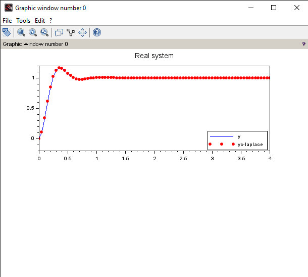
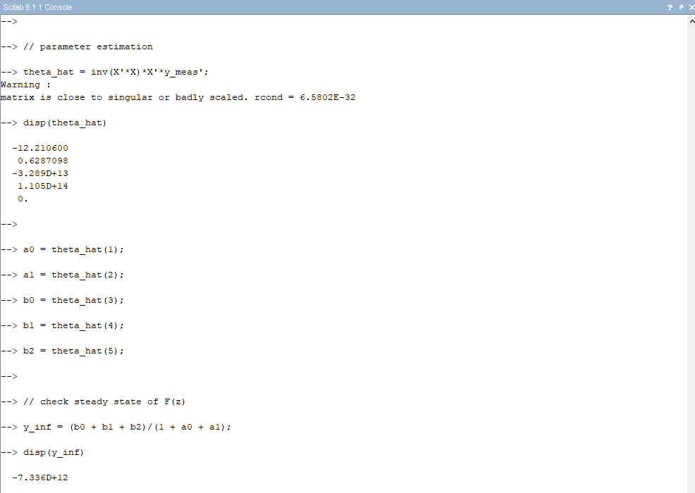

Recursive Least Squares
Problem Statement
- Use
recursive least squaresfor parameter estimation of asecond order dynamic system.
Solution
Step-by-Step solution
NOTE: You can run individual commands in
scilab consoleto see what each command does.
-
Clear the
console,command windowandfigures.//************************************************************************ // Recursive least squares method with exponential forgetting clear; clc; clf; figure(0) title("PT2 System") -
Variables of second order time delay system. Simulate the
real system. First, directly given by thesecond order time delay systemequation and then bylaplace equationof second order system. Also, plotting their graphs.// Simulation of “real” system” -> difference equation of 2nd order time delay system // Suggested transfer function F(z): (T = 0.05 sec, D = 0.5, w0 = 10 / sec) // 0.25 // F(z) = —--------------------- // 1.75 z^2 -2.5 z + 1 K = 1; // Proportional gain T = 0.05; // Time step D = 0.5; // Damping (decay of the oscillation) w0 = 10; // Characteristic Frequency t = [0:T:4]; input_step = ones(1, length(t)); // step input input_ramp = t; // ramp input input_noise = rand(1, length(t)); // noise input // choose input signal u = input_step; // Simulation of real system // Second order time delay system // y(t) = K u [ 1 - (1 / sqrt(1 - D^2)) * e^(-D*w0*t) * sin(w0*sqrt(1 - D^2)*t + arccos(D)] y = K*u.*(1 - (1/sqrt(1 - D^2)) .* exp(-D*w0.*t) .* sin(w0*sqrt(1 - D^2).*t + acos(D))); // Using laplace Transfer Function F(s) = K*(w0^2 / s^2 + 2*D*w0*s + w0^2) s = poly(0, 's'); pt2 = w0^2 / (s^2 + 2*D*w0*s + w0^2); f_s = syslin('c', pt2.num, pt2.den); yc = csim(u, t, f_s); subplot(2, 1, 1) plot(t, y) plot(t, yc, "r.") h1 = legend(['y';'yc-laplace'], 4) title("Real system")
-
First we find second order system in
Z-domainbybilinear transformation. We also determine thesystem order. Then, we simulate the system inZ-domain.// discrete time simulation z = poly(0, 'z'); // Using bilinear transformation s = (2/T)*(z - 1)/(z + 1); pt2_d = w0^2 / (s^2 + 2*D*w0*s + w0^2); function [order, num_r, den_r] = system_order_determination(eqn) num_r = roots(eqn.num) den_r = roots(eqn.den) n = length(num_r) d = length(den_r) if n >= d then order = n else order = d end for i = 1:n for j = 1:d if num_r(i) == den_r(j) order = order - 1 end end end endfunction order = system_order_determination(pt2_d) disp(order) f_z = syslin('d', pt2_d.num, pt2_d.den); yd = flts(u, tf2ss(f_z)); subplot(2, 1, 2) plot(t, yd, "r-") title("Discrete time") -
Using
non-recursive least squares methodforparameter estimation.// conventional parameter estimation e.g. least squares (to solve this task the Scilab script estim_a2.sce can partly be used -> see Scilab examples in iLearn course). // parameter estimation with recorded measurement values // 1) determine system output y_meas and X for parameter estimation N = length(t) - 2; // number of measurement points n = 3; // start index, mentioned as i in the slides // output vector Y y_meas = yd(n:n+N-1); // matrix X for paramters a0, a1, b0, b1, b2 X = [-yd(n-2:n-2+N-1)' -yd(n-1:n-1+N-1)' u(n-2:n-2+N-1)' u(n-1:n-1+N-1)' u(n:n+N-1)']; // parameter estimation theta_hat = inv(X'*X)*X'*y_meas'; disp(theta_hat) a0 = theta_hat(1); a1 = theta_hat(2); b0 = theta_hat(3); b1 = theta_hat(4); b2 = theta_hat(5); // check steady state of F(z) y_inf = (b0 + b1 + b2)/(1 + a0 + a1); disp(y_inf) // Simulation F(z) with estimated parameters Num = [b2*z^2 + b1*z + b0]; Den = [z^2 + a1*z + a0]; F_mod = syslin('d', Num, Den); ymod = flts(u, tf2ss(F_mod)); //plot(t, ymod);
NOTE: From
y_infit is clear that we are unable to findparametersas \( (X^T X)^{-1} \) matrix is nearlysingular.y_infshould be 1 as time approaches infinity for aPT2 system. -
Using
recursive least squares methodto solve the problem.// Implementing the method rescursive least squares and plot of the shape of the parameter determination function alpha = 100 m = size(X, 1) l = size(X, 2) S = alpha*eye(m, m) Theta_hat = zeros(m, l) // Algorithm for k = 1:m-1 for i = 1:l gamma_func(k, i) = (1/(X(k+1, i)'*S(k)*X(k+1, i) + 1))*S(k)*X(k+1, i); Theta_hat(k+1, i) = Theta_hat(k, i) + gamma_func(k, i)*(y_meas(k+1) - X(k+1, i)'*Theta_hat(k, i)); S(k+1) = (eye(1, 1) - gamma_func(k, i)*X(k+1, i)')*S(k); end end for k = 2:m a0(k) = Theta_hat(k, 1); a1(k) = Theta_hat(k, 2); b0(k) = Theta_hat(k, 3); b1(k) = Theta_hat(k, 4); b2(k) = Theta_hat(k, 5); Num = [b2*z^2 + b1*z + b0]; Den = [z^2 + a1*z + a0]; F_mod = syslin('d', Num(k), Den(k)); y2mod(k) = flts(u(k), tf2ss(F_mod)); end plot(t(n:n+N-1), y2mod', "b"); h2 = legend(['yd';'recursive parameter estimation'], 4) -
We can use
RLS method with Exponential Forgettingto better trace the original graph. Instead of5th pointon this step-by-step solution, run the following commands.// Implementing the method rescursive least squares and plot of the shape of the parameter determination function alpha = 100 m = size(X, 1) l = size(X, 2) S = alpha*eye(m, m) Theta_hat = zeros(m, l) // Variable for exponential forgetting lambda = 0.1 // Algorithm for k = 1:m-1 for i = 1:l gamma_func(k, i) = (1/(X(k+1, i)'*S(k)*X(k+1, i) + lambda))*S(k)*X(k+1, i); Theta_hat(k+1, i) = Theta_hat(k, i) + gamma_func(k, i)*(y_meas(k+1) - X(k+1, i)'*Theta_hat(k, i)); S(k+1) = (eye(1, 1) - gamma_func(k, i)*X(k+1, i)')*S(k)*(1/lambda); end end for k = 2:m a0(k) = Theta_hat(k, 1); a1(k) = Theta_hat(k, 2); b0(k) = Theta_hat(k, 3); b1(k) = Theta_hat(k, 4); b2(k) = Theta_hat(k, 5); Num = [b2*z^2 + b1*z + b0]; Den = [z^2 + a1*z + a0]; F_mod = syslin('d', Num(k), Den(k)); y2mod(k) = flts(u(k), tf2ss(F_mod)); end plot(t(n:n+N-1), y2mod', "b"); h2 = legend(['yd';'recursive parameter estimation'], 4)
Check out the difference between
RLSandRLS with exponential forgettingusing the Results.